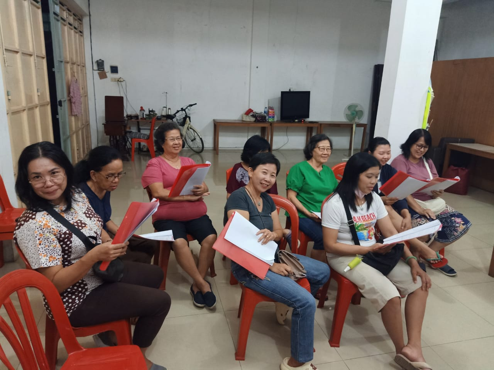
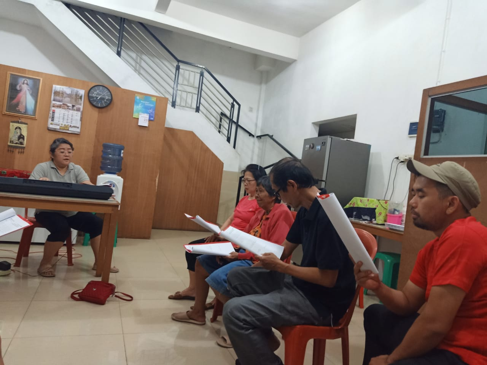
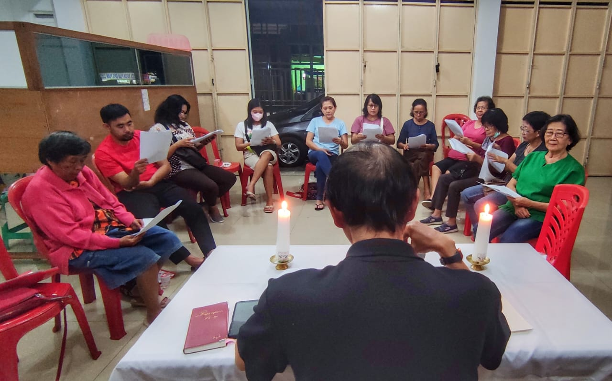
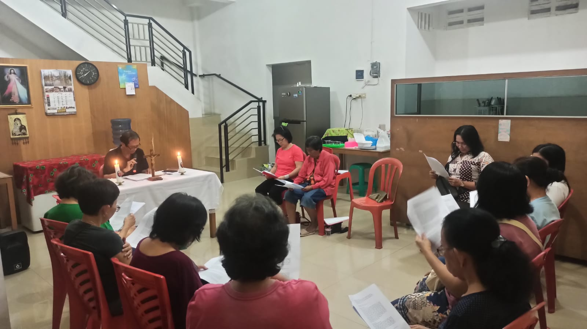
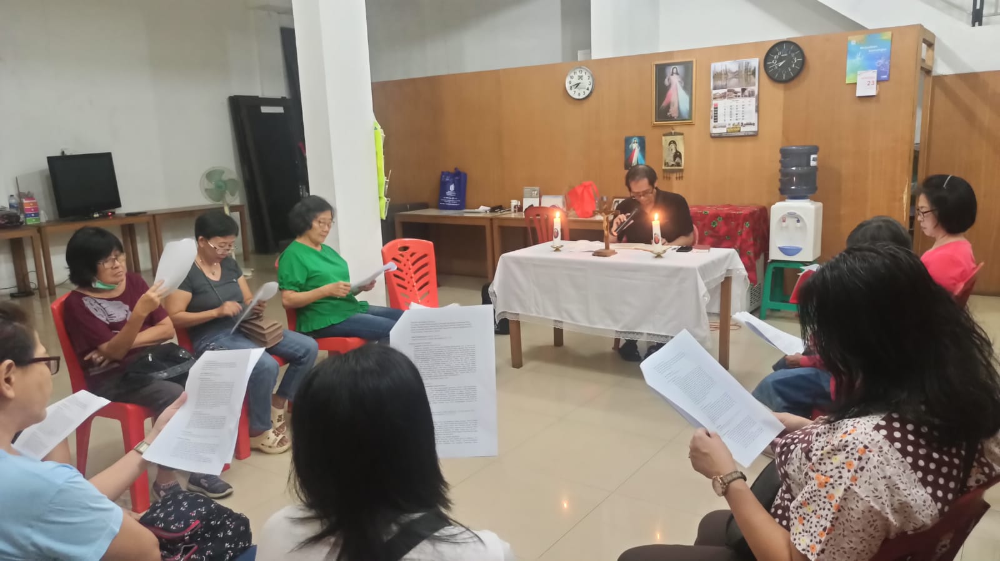

Pertemuan Kredo ke 7
|  |  | |
|  |  |  |
Pertemuan Kredo ke 7 mempelajari bersama tentang pemahaman iman yang utuh akan “Aku percaya akan Roh Kudus Gereja Katolik yang Kudus” ” Gereja Katolik yang Satu, Kudus, Katolik dan Apostolik” sehingga kita dapat menyatakan pengakuan iman dengan mendalam, menghayatinya dengan tangguh dan teguh dan mewartakannya dengan utuh.
Materi pembelajaran diambil dari bahan pendalaman Paroki Mengajar dan Kopendium Katekismus Gereja Katolik(KKGK) nomor 161-176. Gereja itu satu, Kudus, Katolik, dan Apostolik (161- 176).
Inspirasi: Kisah Para Rasul 14:21-28 Kembali ke Antiokhia
14:21 Paulus dan Barnabas memberitakan Injil di kota itu dan memperoleh banyak murid. Lalu kembalilah mereka ke Listra, Ikonium dan Antiokhia.
14:22 Di tempat itu mereka menguatkan hati murid-murid itu dan menasihati mereka supaya mereka bertekun di dalam iman, dan mengatakan, bahwa untuk masuk ke dalam Kerajaan Allah kita harus mengalami banyak sengsara.
14:23 Di tiap-tiap jemaat rasul-rasul itu menetapkan penatua- penatua bagi jemaat itu dan setelah berdoa dan berpuasa, mereka menyerahkan penatua-penatua itu kepada Tuhan, yang adalah sumber kepercayaan mereka.
14:24 Mereka menjelajah seluruh Pisidia dan tiba di Pamfilia.
14:25 Di situ mereka memberitakan firman di Perga, lalu pergi ke Atalia, di pantai.
14:26 Dari situ berlayarlah mereka ke Antiokhia; di tempat itulah mereka dahulu diserahkan kepada kasih karunia Allah untuk memulai pekerjaan, yang telah mereka selesaikan.
14:27 Setibanya di situ mereka memanggil jemaat berkumpul, lalu mereka menceriterakan segala sesuatu yang Allah lakukan dengan perantaraan mereka, dan bahwa Ia telah membuka pintu bagi bangsa-bangsa lain kepada iman.
14:28 Di situ mereka lama tinggal bersama-sama dengan murid-murid itu.
KKGK 165 Dengan cara bagaimana Gereja itu Kudus?
Gereja itu Kudus sejauh Allah yang menjadi pendirinya. Kristus telah menyerahkan Diri-Nya bagi Gereja untuk menguduskannya dan menjadikannya sumber pengudusan. Roh Kudus mencurahkan cinta kasih kepada Gereja. Di dalam Gereja, manusia menemukan kepenuhan sarana keselamatan. Kekudusan merupakan panggilan setiap anggotanya dan merupakan tujuan dari semua kegiatannya. Di antara anggota-anggota Gereja, terdapatlah Perawan Maria dan santo-santa yang menjadi model dan perantara. Kekudusan Gereja merupakan sumber pengudusan bagi anak-anaknya yang di dunia ini mengakui diri mereka sebagai pendosa yang selalu membutuhkan pertobatan dan penyucian.
Gereja itu Satu karena sumber dan teladannya adalah kesatuan Pribadi-Pribadi dalam satu Allah Tritunggal. Yesus adalah Pendiri dan Kepala Gereja. Roh Kudus adalah jiwa Gereja yang mempersatukan semua umat beriman dengan Kristus. Gereja Kristus yang satu ada dalam Gereja Katolik, dipimpin oleh Pengganti Petrus dan para Uskup dalam kesatuan dengannya. Di dalam Gereja dan komunitas- komunitas gerejawi yang terpisah dari kesatuan penuh dengan Gereja Katolik, dapat dijumpai banyak unsur pengudusan dan kebenaran.
Gereja itu Kudus sejauh Allah yang menjadi pendirinya. Gereja itu Katolik, artinya universal, sejauh Kristus hadir di dalamnya. “Di mana terdapat Kristus, di sana juga lah Gereja Katolik”. Gereja mewartakan kepenuhan dan totalitas iman, membawa dan mengatur kepenuhan sarana keselamatan, dan diutus kepada segala bangsa dari segala zaman apa pun kebudayaannya. Gereja itu pada dasarnya bersifat Apostolik karena didirikan di atas “dasar para Rasul” (Ef 2:20), baik dalam ajarannya maupun strukturnya.
Pembaharuan Iman
Kedagingan menggoda kita dengan kenikmatan dunia ini. Karena iman, kita mengatakan bahwa hamba nafsu dapat membuat kita kehilangan keselamatan kekal (lih. Gal 5:19-21), maka “dalam segala keadaan pergunakanlah perisai iman.” (Ef 6:16)